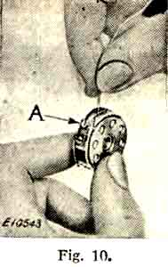

THE NEEDLEBAR
Online Manuals Section
When placing the machine in its case, have the balance wheel at the right hand side of case and see that the base of the machine is at the right of the cleat at the bottom of the case
Unwind the long electric cord supplied with the machine. Push the socket plug at one end of the electric cord as far as it will go to the three-pin terminal block at the right of the machine, as shown in Fig. 8. Attach the plug at the other end of the cord to the nearest electric point.
Place the foot controller in a convenient position on the floor and the machine is ready for operation.
Turn the Singerlight "on" or "off" by means of the switch A, Fig. 2.
Do not attempt to unscrew the bulb. It is of the bayonet and socket type and does not unscrew.
To Remove the Bulb. Press the bulb into the socket at the same time turning it over towards the machine as far as it will go; then withdraw the bulb.
To Insert a New Bulb. Press the bulb into the Singerlight socket and turn it over from the machine until the bulb pin B, Fig. 2, enters the notch in the socket as shown.
When you have finished your sewing, always disconnect the plug from the electric point.
Raise the presser foot (B) by means of the presser bar lifter (C) to prevent injury to the foot and the feed (A).
Place a piece of material under the presser foot and lower the latter upon it.
Turn on the electric current, place the right foot on the rest at the right of the foot controller and turn the foot inwards to depress the pedal. This will set the machine in motion, the speed being perfectly controlled by the amount of pressure which should be gradually applied. Operate the machine in this way, without its being threaded, until accustomed to guiding the material and operating the foot contoller.
This device allows the balance wheel to run free, so that bobbins may be wound without operating the stitching mechanism. To loosen the wheel, hold it with the left hand, and with the right hand hand turn the stop motion screw over towards you, as shown in Fig. 4.
Do not work the machine with the presser foot lowered or with the needle threaded, except when sewing.
Do not try to help the machine by pulling the fabric, lest you bend the needle. The machine feeds the work without assistance
-
(See Fig. 5)
Turn the balance wheel towards you until the take-up lever (6, Fig. 14) is at its highest point. Raise the bed extension (B) as far as it will go, and with the thumb and forefinger of the left hand, open the latch (A) and withdraw the bobbin case.
While the latch is held open, the bobbin is retained in its case. On releasing the latch and turning the case downward, the bobbin will drop out.
(See Figs. 6 and 7)
Remove throat plate and take out screw (P) so that the gib (O) can be displaced as shown in Fig. 7. Turn the bobbin case base so that the small point (U) on the base is beneath the point of the sewing hook, as shown in Fig. 7 and take out the bobbin case base (Q). To replace the base, reverse the operation.
(See Fig. 8)
Loosen the balance wheel (see Fig. 4). Place an empty bobbin on the bobbin winder spindle and push it on as far as it will go. Place a reel of thread on the spool pin (1), and lead the thread into the guide (2), under and between the tension discs (3), and, from the inside, through one of the holes in the left side of the bobbin (4).
Press down th bobbin winder pulley against the belt, and then gradually apply pressure to the foot controller to operate the bobbin winder. The end of the thread must be held until a few coils are wound and should then be broken off. When sufficient thread has been wound upon the bobbin, release pressure on the foot controller, pull the bobbin winder pulley away from the belt and remove the bobbin from the spindle.
If the thread does not wind evenly on the bobbin, loosen the screw which holds the tension bracket (3) in position on the bed of the machine and slide the bracket to the right or left, as may be required. Then tighten the screw.
Hold the bobbin between the thumb and forefinger of the right hand with the thread leading from right to left, as shown in Fig. 9.
With the left hand hold the bobbin case as shown in Fig. 9, the slot in the edge being at the top, and place the bobbin into the bobbin case.
Then pull the thread into the slot as shown in Fig.10, and back under the tension spring into the slot at the end of the tension spring as shown in Fig. 11.
-

-
(See Fig. 12)
After threading the bobbin case hold its latch between the thumb and forefinger of the left hand. Place the bobbin case on the centre stud (A) of the bobbin case base with the thread drawing from the top of the bobbin case. Release the latch and press the bobbin case back until the latch catches the groove near the end of the stud. Allow about three inches of thread to hang free, and turn down the bed extension.
Caution -- If the throat plate is removed for cleaning the stitch-forming mechanism, etc., make certain when replacing the throat plate that the position finger (A2) enters the notch (B2) of the position plate attached to the underside of the throat plate.